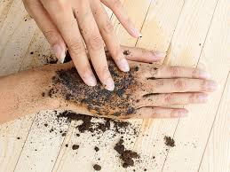
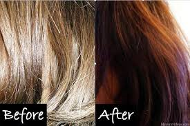
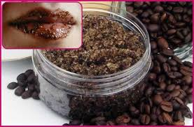
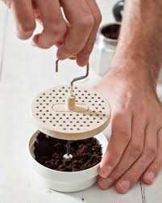
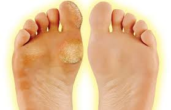
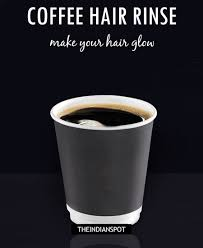

Used coffee grounds can actually reduce the puffiness under tired eyes. Simply place the cooled coffee grounds on those under-eye bags and leave them for twenty minutes. Then rinse them off with cool water.
Exfoliation

The grainy texture of coffee grounds makes them the perfect natural exfoliator. You can combine them with olive oil or water to form a paste, and then rub the mixture on your skin as you would a normal exfoliator.
Scalp Treatment

Need to get rid of product buildup on your scalp? Exfoliating your scalp can get rid of dead skin cells, as well as product buildup. That will help with healthy hair growth. Simply massage your scalp with wet coffee grounds for about a minute and rinse. Then shampoo and condition like normal.
Hair Color

Coffee can even work as a tint to enhance brown shades in hair. Simply combine one part ground coffee with one part conditioner (a palmful of each will do), and spread it into your hair. Leave it for about 5-10 minutes, and then rinse.
Skin Brightener

Need more radiant skin? The caffeine that coffee is so beloved for increases circulation, leading to a brighter appearance. Mix two parts raw honey, yogurt or mushed avocado to one part coffee grounds. Leave the mixture on your skin for about twenty minutes, and then rinse it off.
Cellulite Treatment

Coffee is a great treatment for cellulite. Simply combine cooled coffee grounds with some water to make a paste, and then scrub the skin with it for a couple minutes or so. That will tighten the skin right up.
Hair Mask

For adding shine and softness to hair, combine two parts olive oil with one part coffee powder. Apply the mixture to your hair and leave for 20-30 minutes, and then rinse.
Foot Repair

Coffee is high in antioxidants, plus has an amazing smell. That makes it a great way to unwind and soothe tired feet. Combine two parts coconut oil to one part coffee grounds, and then soak your feet in warm water for a few minutes. While your feet are wet, use this moisturizing and exfoliating scrub on your feet, and then rinse.
Lip Exfoliator

Coffee grounds also make a great lip exfoliator, since they’ll stimulate blood flow to the area (leading to redder lips) and scrub away those dead skin cells. Simply rub your lips with some wet coffee grounds for a minute or so a few times per week.
Bronze Skin

Coffee’s natural coloring also makes it a popular DIY skin bronzer. You can get this benefit by making your own homemade lotion out of coffee and natural oils. You’ll want to measure out two parts olive oil to one part coffee grounds (add more coffee grounds to experiment with a deeper color, if you wish).
To make this, you’ll infuse the oil with the coffee grounds. Place the olive oil in a glass jar and put that in an inch of water in a pan. Heat the pan over medium heat. Add your coffee grounds, take it down to low heat, and let it sit for an hour, stirring occasionally. Strain the oil using a coffee filter, and then let the infused oil cool. Mix the olive oil with enough cool coconut oil to form a lotion-like consistency. Apply to your skin as you would a lotion.
Face Mask

Coffee is a great additive to homemade face masks for its skin tightening and stimulating properties. Combine equal parts coffee grounds, raw honey and yogurt, and then leave that on your face for thirty minutes.
Deodorizer

Have some lingering smells on your hands or want to get rid of foot odor? Scrub those troubled areas with coffee grounds for a minute or so, and then rinse.
Callous Scrub

One of the most popular uses for coffee is to use it in a basic, easy scrub. Simply combine coffee grounds with enough oil or water to form a paste, and scrub those callouses away.
Hair Rinse

You can also use coffee as a hair mask to add shine and luster to hair. Simply douse your hair with freshly brewed, strong and cool coffee while in the shower, leave for 10-15 minutes and then rinse. Use this after you’ve shampooed and conditioned.


Hi, this is a comment.
To get started with moderating, editing, and deleting comments, please visit the Comments screen in the dashboard.
Commenter avatars come from Gravatar.